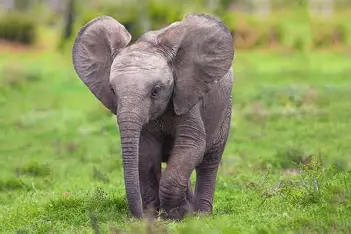

 The Indian elephant (Elephas maximus indicus) is one of three recognized subspecies of the Asian elephant and native to mainland Asia. Since 1986, Elephas maximus has been listed as Endangered by IUCN as the population has declined by at least 50% over the last three generations, estimated to be 60–75 years. Asian elephants are threatened by habitat loss, degradation and fragmentation.
See Also :
| 1 | Illegal Hunting |
| 2 | Industrialisation |
| 3 | Habitat Loss |
| 4 | Fragmentation |
| 5 | Disease |
For further enquiries and reservations Contact Us